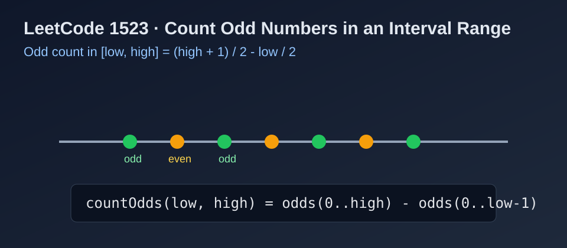

LeetCode 1523: Count Odd Numbers in an Interval Range (Parity Count Formula)
LeetCode 1523MathParityPrefix CountingToday we solve LeetCode 1523 - Count Odd Numbers in an Interval Range.
Source: https://leetcode.com/problems/count-odd-numbers-in-an-interval-range/

English
Problem Summary
Given two non-negative integers low and high, return how many odd integers exist in the inclusive interval [low, high].
Key Insight
The number of odd integers from 0 to x is (x + 1) / 2 (integer division).
So the answer for [low, high] is:
odds(high) - odds(low - 1).
Alternative Intuition
Let len = high - low + 1. If len is even, half are odd.
If len is odd, result depends on whether low is odd:
- len / 2 + 1 when low is odd
- len / 2 when low is even.
Complexity Analysis
Time: O(1).
Space: O(1).
Reference Implementations (Java / Go / C++ / Python / JavaScript)
class Solution {
public int countOdds(int low, int high) {
return ((high + 1) / 2) - (low / 2);
}
}func countOdds(low int, high int) int {
return (high+1)/2 - low/2
}class Solution {
public:
int countOdds(int low, int high) {
return (high + 1) / 2 - low / 2;
}
};class Solution:
def countOdds(self, low: int, high: int) -> int:
return (high + 1) // 2 - low // 2var countOdds = function(low, high) {
return Math.floor((high + 1) / 2) - Math.floor(low / 2);
};中文
题目概述
给定两个非负整数 low 和 high，求闭区间 [low, high] 内奇数的个数。
核心思路
先看前缀：从 0 到 x 的奇数个数是 (x + 1) / 2（整数除法）。
因此区间答案就是：
odds(high) - odds(low - 1)，可化简为 (high + 1) / 2 - low / 2。
另一种直观理解
设区间长度 len = high - low + 1。
- 若 len 为偶数，奇数个数一定是 len / 2。
- 若 len 为奇数，则看 low 奇偶：
• low 为奇数，答案是 len / 2 + 1
• low 为偶数，答案是 len / 2。
复杂度分析
时间复杂度：O(1)。
空间复杂度：O(1)。
多语言参考实现（Java / Go / C++ / Python / JavaScript）
class Solution {
public int countOdds(int low, int high) {
return ((high + 1) / 2) - (low / 2);
}
}func countOdds(low int, high int) int {
return (high+1)/2 - low/2
}class Solution {
public:
int countOdds(int low, int high) {
return (high + 1) / 2 - low / 2;
}
};class Solution:
def countOdds(self, low: int, high: int) -> int:
return (high + 1) // 2 - low // 2var countOdds = function(low, high) {
return Math.floor((high + 1) / 2) - Math.floor(low / 2);
};
Comments